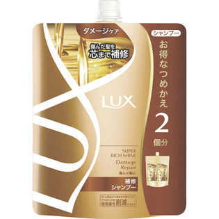

返回列表
产品名称：ラックススーパーリッチシャインダメージリペア補修シャンプーつめかえ用

ユニリーバ・ジャパン ラックススーパーリッチシャインダメージリペア補修シャンプーつめかえ用 ６６０ｇ
メーカー ユニリーバ・ジャパン
JANコード 4902111733326
商品の特徴
お得なつめかえ2回分
- 成分・分量
- ＜成分＞
水、ラウレス硫酸Na、ジステアリン酸グリコール、ジメチコノール、コカミドプロピルベタイン、コカミドMEA、アルガニアスピノサ核油、加水分解ヒアルロン酸、ヒアルロン酸ヒドロキシプロピルトリモニウム、スクワラン、酢酸トコフェロール、アルギニン、リシンHCl、ミネラルオイル、グアーヒドロキシプロピルトリモニウムクロリド、カルボマー、クエン酸、塩化Na、ドデシルベンゼンスルホン酸TEA、TEA、水酸化Na、EDTA-2Na、安息香酸Na、メチルイソチアゾリノン、メチルクロロイソチアゾリノン、香料、カラメル
- 用法及び用量
- -